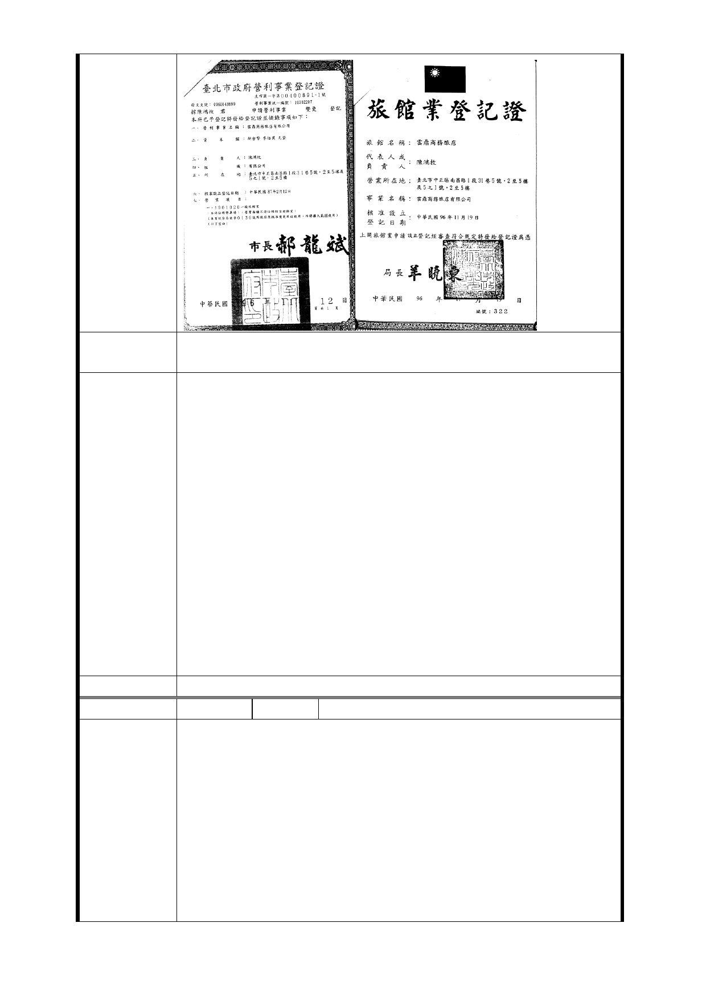

建議辦法
1. 專案辦理
2. 設置旅館業的位置
1.開發用地屬捷運設施用地者，其地上物由本局依「臺北市
舉辦公共工程拆遷補償自治條例」及「臺北市舉辦公共工程
拆遷補償自治條例施行細則」之規定辦理查估發給補償費、
拆遷獎勵金及人口搬遷補助費、營業損失補償費等。
2.本府捷運工程局擬修訂之甄選臺北都會區大眾捷運系統土
地開發投資人須知(草案)內容，擬朝向將原私有土地所有權
市府回應
意見
人之需求納入考量，除甄選階段要求投資申請人須考量其需
求外，並列為評選階段開發建議書之審查重點，後續如公開
徵得投資人後，亦將請投資人適時召開相關辦理程序及進度
說明會，以利參與開發之原土地所有權人了解辦理情形。
3.已於細部計畫說明書內註明：「捷四土地原使用分區分屬「
商 3 特(原屬商 2)」及「住 4」兩種土地使用分區，考量其未
來位於三條捷運線交會處，且為利後續聯合開發基地整體配
置使用，其使用得比照第三種商業區，並依全市商業區通盤
檢討案等相關回饋規定辦理。」，保留未來作為旅館之彈性。
委員會決議 同編號交一－1 委員會決議。
編 號 捷四-3 陳情人 李蔡○玉、張鄧○妹
100.12.2
1. 有關大眾捷運法第十二條規定：「大眾捷運系統規劃報告
書，應由中央主管機關報請或核轉行政院核定，內容應包
含右列事項：十、依第十條第十二項規定召開公聽會之經
陳情理由
過及徵求意見之處理結果。」而本法第十條第十二項之規
定：「辦理捷運系統規劃時，主管機關或民間應召開公聽
會公開徵求意見」，本人請教本案在系統規劃報告中有無
依此規定先行召開公聽會；而且依法是應召開而非得召開
，如果沒召開的話，這項行政院核定就有違法之嫌。因為
核定後主管機關於規劃路線經行政院核定後，應會同當地
- 20 -